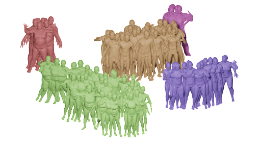
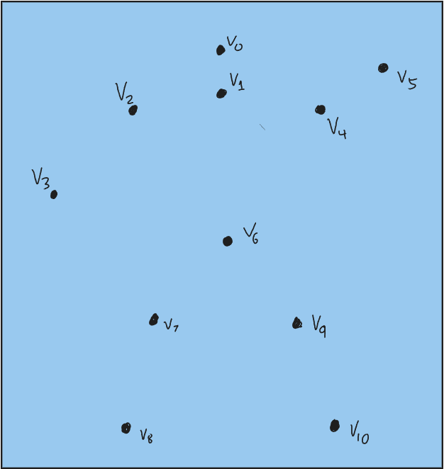
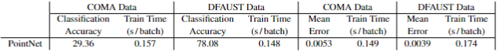
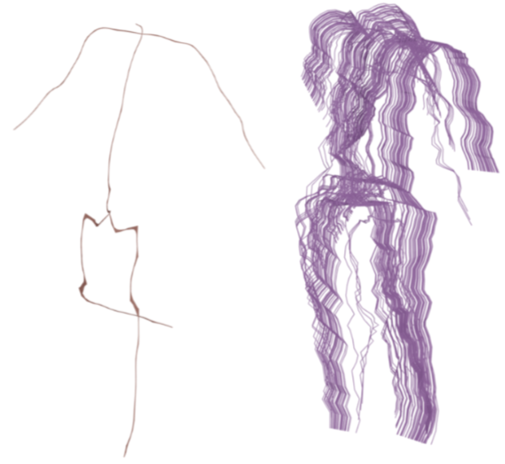

$\renewcommand{\Diff}{\mathcal{D}}\newcommand{\dist}{\mathrm{dist}}\renewcommand{\Imm}{\mathcal{I}}\newcommand{\Shape}{\mathcal{S}}\newcommand{\R}{\mathbb{R}}\newcommand{\vol}{\operatorname{vol}}\newcommand{\Vol}{\mathrm{Vol}}\newcommand{\Var}{V}$
<h4>Geometric Deep Learning on Unregistered Shape Data<br></h4><hr> <p> <b>Emmanuel Hartman$^1$</b>, Emery Pierson$^2$, Sophie Allen$^1$, Sam Vecchio$^1$ <br> <br>$^1$Florida State University<br><br>$^2$University of Vienna, University of Lille<br></p><hr><p> Machine Learning and Data Science Seminar<br> 17 November 2023 </p>
<h4 align="left">Shape Data and Motivation</h4><hr> <div class="row"><div class="col-md-4" markdown="1" align="center" vertical-align="center"> <br> </div> <div class="col-md-4" markdown="1" align="center" vertical-align="center"> <br> </div> <div class="col-md-4" markdown="1" align="center" vertical-align="center"> <img src="figs/skulls.gif" width="60%" /><br> </div> </div> <div class="col-md-12" markdown="1" align="left" vertical-align="center"><p>Geometric data includes variability which does not change the shape of the data (i.e translation, rotation, and reparameterization)</p></div>
<h4 align="left">Discrete Shape Graphs</h4><hr> <div class="row" align="left"> <p>For this project, we consider 3-dimensional shape graphs.</p> <div class="col-md-8" markdown="1" align="left"> <p>We represent a shape graph by a tuple $\mathcal{C}=(V,E)$ where:</p> <p> + $V$ denotes an indexed list of 3d points.</p> <p> + $E$ is a list of undirected edges given by the indices of the endpoints.</p> <span class="fragment fade-left"> <p>Consider for example: </p><br> <p>$V=\{v_0,v_1,v_2,v_3,v_4,v_5,v_6,v_7,v_8,v_9,v_{10}\}$</p> <p>$E=\{\{0,1\},\{1,2\},\{2,3\},\{1,4\},\{4,5\},\{1,6\},\{6,7\},\{7,8\},\{6,9\},\{9,10\}\}$</p> </span> </div> <div class="col-md-4" markdown="1" align="center"> <div class="r-stack"> <span class="fragment current-visible"></span> <span class="fragment current-visible"></span> <span class="fragment current-visible"></span> </div> </div> </div>
<h4 align="left">Parameterization Invariant Feature Vectors</h4><hr> <div class="row" align="left"> <p>Our primary goal for this project to provide a framework for effeciently representing large datasets of discrete shape graphs with arbitrary numbers of vertices and parameterization.</p> <div class="col-md-8" markdown="1" align="left"><br> <p>These representations should be invariant to the given parameterization and independent of variability that does not change the shape of given objects. <br><br>Thus, the representations can then be used to characterize data based on only the variability of the shape of the data. </p><br><br> <p>Traditional approaches to this problem from the field of shape analysis ([1,2,3]) require solving a matching problem for each pair of elements of dataset.<br><br> We seek to train a geometric deep learning framework to map shape graphs to parameterization invariant feature vector representations. </p><br> </div> <div class="col-md-4" markdown="1" align="center"> <div class="r-stack"> <span class="fragment current-visible"></span> <span class="fragment current-visible"><img src="figs/InvarianceExplainer.png" width="100%"/></span> <span class="fragment current-visible"></span> </div></div> </div> <hr> <p><sub>[1] Sukurdeep et al. "A new variational model for shape graph registration with partial matching constraints"<br>[2] Guo et al. "Statistical shape analysis of brain arterial networks (BAN)"<br>[3] Bal et al. "Statistical Shape Analysis of Shape Graphs with Applications to Retinal Blood-Vessel Networks"</sub></p>
<h4 align="left">Varifolds</h4><hr> <div class="row"> <div class="col-md-12" markdown="1" align="left"> <p>Our framework involves the approach of [1], which considers varifold representations of unregistered shape graphs.<br></p> <p>The space of varifolds is given by Borel measures on the Cartesian product of $\R^3$ and the unit sphere $S^2$ denoted by $\mathcal{M}(\R^3\times S^2)$.</p><br> <p>The space of varifolds is equipped with a Reproducing Kernel Hilbert Space (RKHS) norm, where the kernel function is defined coordinate-wise by taking the product of a Gaussian kernel on $\R^3$ and a Binet kernel on $S^2$.<br> Let $\mu, \nu\in \mathcal{M}(\R^3\times S^2)$. The inner product defined by this kernel is given by \[\langle\mu,\nu\rangle_{Var}=\int_{\R^3\times S^2}\int_{\R^3\times S^2} e^{-a\|x_1-x_2\|^2} \langle u_1,u_2\rangle^2 d\mu \, d\nu\] where $a$ is a balancing parameter. From this inner product, a distance on the space of varifolds is given by \[\|\mu-\nu\|^2=\langle\mu,\mu\rangle_{Var}+\langle\nu,\nu\rangle_{Var}-2\langle\mu,\nu\rangle_{Var}.\]</p> </div> </div> <hr> <p><sub>[1] Sukurdeep et al. "A new variational model for shape graph registration with partial matching constraints"</sub></p>
<h4 align="left">Discrete Varifold Representations for Discrete Shape Graphs</h4><hr> <div class="row"> <div class="col-md-12" markdown="1" align="left"><p>The varifolds associated with a discrete shape graph given by $\mathcal{C}=(V,E)$ can be approximated by a finitely supported measure given by\[\mu = \sum_{e_i\in E}l_i\delta_{c_i,u_i} \] where $c_i$ denotes the centroid of $e_i$, $u_i$ denotes the normalized tangent vector of $e_i$, and $l_i$ denotes the length of $e_i$. </p><br><br> <p>We define the dissimilarity between two discrete shape graphs $\mathcal{C}_1=(V_1,E_1)$ and $\mathcal{C}_2=(V_2,E_2)$ as the varifold distance between the associated finitely supported varifolds $\mu_1,\mu_2$ respectively. In particular, we denote this by $d_{Var}(\mathcal{C}_1,\mathcal{C}_2)=\|\mu_1-\mu_2\|$.</p><br><br> <p>As these varifolds are finitely supported the inner product can be computed by a sum over $E_1$ and $E_2$ given by \[\langle\mu_1,\mu_2\rangle_{Var}=\sum_{e_i\in E_1}\sum_{e_j\in E_2} e^{-a\|c_i-c_j\|^2} \langle u_i,u_j\rangle^2 l_i l_j.\]</p> <p>Thus, the varifold distance is effeciently computable. Moreover, $d_{Var}(\mathcal{C}_1,\mathcal{C}_2)$ is differentible with respect to the vertices of $\mathcal{C}_1$ and $\mathcal{C}_2$.<br> Finally, $d_{Var}$ is invariant to parameterization. In particular, if $\mathcal{C}_2$ is a resampling of $\mathcal{C}_1$, then $d_{Var}(\mathcal{C}_1,\mathcal{C}_2)\thicksim 0$. </p> </div> </div>
<h4 align="left">Downstream Learning Tasks</h4><hr> <div class="row"> <div class="col-md-12" markdown="1" align="left"> <p>This talk will evaluate the feature vector frameworks based on two downstream tasks for unregistered data. We would like to: </p><br> <p class="fragment fade-left">+ classify unregistered data where labels depend on the shape of an object.</p> <br> <p class="fragment fade-left">+ produce reconstructions of discrete shape graphs with a fixed point to point correspondence.</p> <br> <div class="r-stack" markdown="1" align="left"> <span class="fragment current-visible"></span> </div> </div> </div>
<h4 align="left">Datasets</h4><hr> <div class="row" align="left"> <p>We first consider numerical results on four datasets of 3-dimensional curves/shape graphs.</p> <div class="col-md-6" markdown="1" align="left"> <p>We extract this geometric data from surface meshes from the COMA (faces), DFAUST, and FAUST (human bodies) datasets. <br><br> The COMA and DFAUST datasets contain scans of 12 identities present in each dataset. We include these as labels to train the classifier network.<br><br> The FAUST data set contains significatly fewer meshes, so we use this data extracted from this set to test the generalizability of models trained on DFAUST.<br><br> Finally, we consider a set of 100 resamplings of random shape graphs from the DFAUST testing data to test the reparameterization invariance of each model trained on DFAUST. </p> </div> <div class="col-md-6" markdown="1" align="left"> <img src="figs/extraction.png" width="100%"/><br> <p></p> </div> <img src="figs/datasets.png" width="100%"/> </div>
<h4 align="left">Existing Approaches</h4><hr> <div class="row"> <div class="col-md-12" markdown="1" align="left"><p>Existing approaches for parameterization invariant representations of geometric data treat the data as point clouds.</p> <p>We will discuss briefly PointNet and Dynamic Graph Convolutional Nueral Networks (DGCNN).</p><br> <p> These methods both approach finding parameterization invariant representations by:</p><br> <p class="fragment fade-left"> +learning a non-linear map that takes the vertices into a high dimensional space.</p><br> <p class="fragment fade-left"> +applying a symmetric function to the mapped vertices to obtain a representation of the total object.</p><br> <p class="fragment fade-left"> Notably, DGCNN utilizizes the k-nearest neighbors of each vertex as the input to the learned map.</p> </div> </div>
<h4 align="left">PointNet</h4><hr> <div class="row" align="left"> <div class="col-md-12" markdown="1" align="left"></div> </div> <hr> <p><sub>[1] Qi et al. "PointNet: Deep Learning on Point Sets for 3D Classification and Segmentation"</sub></p>
<h4 align="left">PointNet Results</h4><hr> <div class="row"> <div class="col-md-9" markdown="1" align="left"></div> <div class="col-md-3" markdown="1" align="center"></div> </div>
<h4 align="left">PointNet Results Continued</h4><hr> <div class="row"> <div class="col-md-8" markdown="1" align="left"></div> <div class="col-md-4" markdown="1" align="center"><span class="fragment fade-left"></span></div> </div>
<h4 align="left">DGCNN</h4><hr> <div class="row"> <div class="col-md-12" markdown="1" align="left"></div> <div class="col-md-6" markdown="1" align="left"><br><p>DGCNN builds upon the approach of PointNet by performing graph edge convolutions of a dynamic graph created by connecting each vertex to the k nearest neighbors and pooling neighboring vertex information to learn the map from vertices into high dimensional representations.</p> <br><p>These high dimensional representations are again pooled via a symmetric function to provide a global feature vector representation of the input data. </p></div> <div class="col-md-6" markdown="1" align="center"><br><img src="figs/EdgeConv.png" width="80%"/><br><br></div> </div> <hr> <p><sub>[1] Wang et al. "Dynamic Graph CNN for Learning on Point Clouds"</sub></p>
<h4 align="left">DGCNN Results</h4><hr> <div class="row"> <div class="col-md-9" markdown="1" align="left"></div> <div class="col-md-3" markdown="1" align="center"></div> </div>
<h4 align="left">DGCNN Results Continued</h4><hr> <div class="row"> <div class="col-md-8" markdown="1" align="left"></div> <div class="col-md-4" markdown="1" align="center"><span class="fragment fade-left"></span></div> </div>
<h4 align="left">Our Method</h4><hr> <div class="row"> <div class="col-md-8" markdown="1" align="left"><p> We consider a data driven approach where we utilize a template object a a representative of the given dataset.</p><br><br> <p>These representatives can be carefully contstucted (i.e. the mean of the dataset), but for the examples we show to today we take a random element of the training dataset as the template object which we denote $\mathcal{T}$.</p> </div> <div class="col-md-4" markdown="1" align="center"></div> </div>
<h4 align="left">Varifold Gradient for Feature Vector Representations</h4><hr> <div class="row"> <div class="col-md-6" markdown="1" align="left"><p>Our feature vector architecture represents input data by:</p><br> <p class="fragment fade-left">+ Computing the gradient of the varifold distance between $\mathcal{T}$ and the input data $\mathcal{C}$ with respect to the vertices of $\mathcal{T}$. <br><br></p> <p class="fragment fade-left">+ This produces 3-dimensional tangent vectors on $\mathcal{T}$. <br></p> <p class="fragment fade-left">+ We then learn feature vector representations by training a series of edge convolutions and edge pooling layers with respect to the edges of $\mathcal{T}$. <br></p></div> <div class="col-md-6" markdown="1" align="center"><br><img src="figs/overview.png" width="100%"/></div> </div>
<h4 align="left">VariGrad Results</h4><hr> <div class="row"> <div class="col-md-8" markdown="1" align="left"></div> <div class="col-md-4" markdown="1" align="center"></div> </div>
<h4 align="left">VariGrad Results Continued</h4><hr> <div class="row"> <div class="col-md-5" markdown="1" align="left"><img src="figs/VariGradResults2.png" height="80%"/></div> <div class="col-md-7" markdown="1" align="center"><span class="fragment fade-left"></span></div> </div>
<h4 align="left">Conclusion Pt. 1 </h4><hr> <div class="row"> <div class="col-md-9" markdown="1" align="left"><p>VariGrad is an effective feature vector architecture for unregistered shape graphs that offers</p><br><br> <p class="fragment fade-left"> + effecient training of models compared to existing frameworks.</p><br> <p class="fragment fade-left"> + superior results in downstream learning tasks (namely classification/reconstruction).</p><br> <p class="fragment fade-left"> + robustness to reparameterizations / resamplings.</p><br> <p class="fragment fade-left"> The are still several hurdles before this framework can be used for applications to "real world" data.</p> <p class="fragment fade-left"> + namely we will discuss these hurdles as they pertain to reconstruction models.</p><br> </div> <div class="col-md-3" markdown="1" align="center"></div> </div>
<h4 align="left">Analyzing Shape Graph Data with Missing Parts </h4><hr> <div class="row" align="left"> <div class="col-md-8" markdown="1" align="left"> <p>One significant hurdle to reconstructing shape graphs from real world datasets is shape graphs with missing parts and different topological structures than the template object.</p><br><br> <p class="fragment fade-left">One example is a dataset of more complex shape graphs extracted from the COMA dataset where large portions of the shape graphs have a chance to be artificially removed. </p><br><br> <p class="fragment fade-left">We can still train our reconstruction model using this data, which produces reconstructions where the missing parts remain present. </p><br><br> <p class="fragment fade-left">These reconstructions do not respect the different topological structures of the data and the associated change in shape.</p><br><br> </div> <div class="col-md-4" markdown="1" align="center"> <div class="r-stack"> <span></span> <span class="fragment current-visible"><img src="figs/MissingParts1.png" width="100%"/></span> <span class="fragment current-visible"><img src="figs/MissingParts2.png" width="100%"/></span> </div> </div> <p class="fragment fade-left">How can we possibly do this when the outputs of our model have a fixed edge connectivity?</p><br><br> </div>
<h4 align="left">Weighted Shape Graphs Representations</h4><hr> <div class="row"><div class="col-md-8" markdown="1" align="left"> <p>We represent a weighted shape graph by a tuple $\mathcal{C}=(V,E,W)$ where:</p> <p> + $V$ denotes an indexed list of 3d points.</p> <p> + $E$ is a list of undirected edges given by the indices of the endpoints.</p> <p> + $W$ is a list of weights in $[0,1]$ corresponding to the probability that an edge is present.</p> <span class="fragment fade-left"> <br><br><p>Consider for example: </p><br> <p>$V=\{v_0,v_1,v_2,v_3,v_4,v_5,v_6,v_7,v_8,v_9,v_{10}\}$</p> <p>$E=\{\{0,1\},\{1,2\},\{2,3\},\{1,4\},\{4,5\},\{1,6\},\{6,7\},\{7,8\},\{6,9\},\{9,10\}\}$</p> <p>$W=\{1,1,1,1,0,0,1,1,1,1\}$</p><br> </span> </div> <div class="col-md-4" markdown="1" align="center"> <div class="r-stack"> <span class="fragment current-visible"></span> <span class="fragment current-visible"></span> <span class="fragment current-visible"></span> <span class="fragment current-visible"></span> <span class="fragment current-visible"></span> </div> </div> <p class="fragment fade-left"> We are currently working on an extension of the VariGrad architecture that learns edge weights in addition to shape graph reconstruction.</p> </div> <hr> <p><sub>[1] Sukurdeep et al. "A new variational model for shape graph registration with partial matching constraints"<br>[2] Guo et al. "Statistical shape analysis of brain arterial networks (BAN)"<br>[3] Bal et al. "Statistical Shape Analysis of Shape Graphs with Applications to Retinal Blood-Vessel Networks"</sub></p>
<h4 align="left">Using Parameterization Invariant Representations For Analysis</h4><hr> <div class="row" align="left"> <p>How can we use our parameterization invariant feature vector representations of shape graphs to do further analysis of large datasets?</p> <div class="col-md-6" markdown="1" align="left"> <p>For now, we would like to:</p><br> <p class="fragment fade-left"> + describe interpolations between two shape graphs.</p> <p class="fragment fade-left"> + describe the mean shape of the data. </p> <p class="fragment fade-left"> + describe modalities of shape change in the data.</p> <p class="fragment fade-left"> We will consider a naive approach where we equip the latent space with a Euclidean metric and perform our analysis of the latent vector representations of the dataset.</p> </div> <div class="col-md-6" markdown="1" align="left"> <span class="fragment current-visible"></span> </div> </div>
<h4 align="left">Analysis of the Latent Space With the Euclidean Metric </h4><hr> <div class="row" align="left"> <p>We can equip the latent vector space with the Euclidean metric and perform our analysis directly on the parameterization invariant representations of the input data.<br><br></p> <div class="col-md-6" markdown="1" align="left"> <p>+ To interpolate between two shapes we can simply linearly intererpolate between the associated latent vector representations and map the resulting path into the output space. <br><br></p> <p>+ We can compute the mean shape of a dataset by computing the arithmetic mean of the latent vector representations and map the resulting vector into the output space via the decoder map.<br><br></p> <p>+ Moreover, we can perform principal component analysis (PCA) on the latent vector representations to find the primary modalities of variation in the latent vector space. We can then map these variations into the output space to visualize them.<br> <br></p> </div> <div class="col-md-6" markdown="1" align="center"> <div class="r-stack"> <span class="fragment current-visible"></span> <span class="fragment current-visible"></span> <span class="fragment current-visible"></span> </div> </div> </div>
<h4 align="left">Analysis of the Output Space With the Square Root Velocity Metric</h4><hr> <div class="row" align="left"> <p>Alternatively, we can equip the output space with the Square Root Velocity (SRV) metric [1] and perform our analysis directly on reconstructions produced by the model that have a fixed point to point correspondance.<br><br></p> <div class="col-md-12" markdown="1" align="left"> <p class="fragment fade-left">+ The output space of our model is shape graphs of the form $\mathcal{C}=(V, E)$ where $V$ is the fixed-length, ordered list of vertices produced by the model and $E$ is the edges of the template graph.<br><br></p> <p class="fragment fade-left">+ Note that these shape graphs may be seen as edge-wise linear maps of the template $\mathcal{T}$ into $\R^3$ and such maps are a subset of the absolutely continuous maps from $\mathcal{T}$ to $\R^3$ (denoted $\operatorname{AC}(\mathcal{T},\R^3)$). <br><br></p> <p class="fragment fade-left">+ We consider the SRV transform [1], \begin{align*} Q:\operatorname{AC}(\mathcal{T},\R^3)&\to L^2(\mathcal{T},\R^3) \text{ given by } \\ f&\mapsto q_f\text{ where }q_f(t):=\begin{cases}\frac{f'(t)}{\sqrt{|f'(t)|}}& \text{if } |f'(t)|>0 \\0&\text{otherwise}\end{cases}.\end{align*}<br></p><br> <p class="fragment fade-left">+ Then we can pullback the standard $L^2$ metric onto our output space via $Q$. <br>We may then perform our analysis on the output space with respect to this metric.</p><br> <hr> </div> <p><sub>[1] Srivastava et al. "Shape Analysis of Elastic Curves in Euclidean Spaces"</sub></p>
<h4 align="left">Analysis of the Output Space With the Square Root Velocity Metric</h4><hr> <div class="row" align="left"> <p>We can equip the latent feature vector space with a Euclidean metric and perform our analysis directly on the parameterization invariant representations of the input data.<br><br></p> <div class="col-md-6" markdown="1" align="left"> <p>+ To interpolate between two shapes we can compute geodesics in the output space with respect to the SRV metric. <br><br></p> <p>+ We can compute the mean shape of a dataset by computing the Frechet mean of the outputs of the model with respect to the SRV metric.<br><br></p> <p>+ Finally, we can compute tangent space PCA which extends PCA to non-Euclidean manifolds such as the output space equipped with the SRV metric.<br><br></p> </div> <div class="col-md-6" markdown="1" align="center"> <div class="r-stack"> <span class="fragment current-visible"></span> <span class="fragment current-visible"></span> <span class="fragment current-visible"></span> </div> </div> </div> </div>
<h4 align="left">Conclusion Pt.2 And Future Work</h4><hr> <p align="left"> We discussed several avenues of future work we are pursuing to make this framework more viable for the analysis of real world datasets. Namely we showed discussed an approach of learning weighted shape graph reconstructions and tools for the analysis of large datasets of shapegraphs. Our plans moving forward are as folows:<br><br> </p><div class="row"> <div class="col-md-8" markdown="1" align="left"> <p class="fragment fade-left">+ Further expeirements with improvements to the weight learning methods. </p><br> <p class="fragment fade-left">+ Expeirements with geometric constraints on the feature vector space so that the Euclidean metric is pushed forward to the desired metric on the output space.<br><br></p> <p class="fragment fade-left">+ Applying this framework to datasets of shape graphs (ie scans of neuronal structures). </p><br> <p class="fragment fade-left">+ Extending this approach to other forms of geometric data such as point clouds and 3d meshes. </p><br> <hr> <p> This talk is based on:<br><a href="https://diglib.eg.org/handle/10.2312/3dor20231150">https://diglib.eg.org/handle/10.2312/3dor20231150</a><br> The code for a Pytorch implementation VariGrad model is available at:<br> <a href="https://github.com/emmanuel-hartman/Pytorch_VariGrad">https://github.com/emmanuel-hartman/Pytorch_VariGrad</a><br> These slides are available at:<br><a href="https://www.math.fsu.edu/~ehartman/Slides/VariGrad/talk.html">www.math.fsu.edu/~ehartman/Slides/VariGrad/talk.html</a> </p> </div> <div class="col-md-4" markdown="1" align="center"> <br><br> <center><p>Thank you for your attention!</p></center>